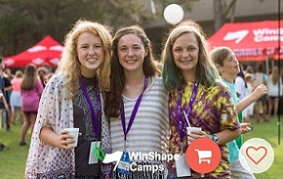
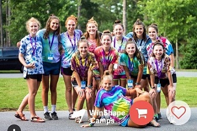
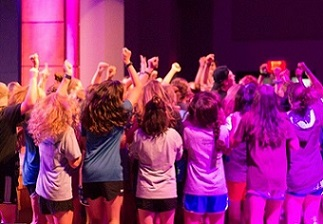
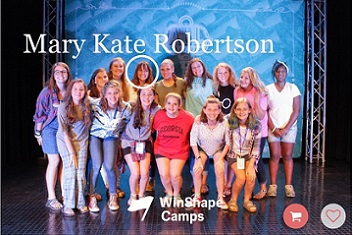

Camp Winshape is a Christian camp for girls and boys from the ages of six and seventeen. You can do overnight one week camps or overnight two week camps.
At camp, we had a daily scheduele. You and your cabin wake up at 6:30 and get to breakfast. Then, you go to your cabin and work on your daily devotional. Once you are done, you clean the part of the room you're assigned to clean. Once your cabin is clean, y'all go to Jumpstart where you learn about Jesus. After that, you go to tribal challenge, which can range from an arts and crafts project to playing on the expo on the lake. When tribal challenge is over, you and your tribe go to lunch and then to cabin kick back (which is just fancy talk for nap time). Then comes the best part of the day... SKILLS!!! What are skills? Skills are the six activities you are given at the begining of camp based on what you like to do. This summer I was able to do archery, tennis, gormet chef, indoor rock climbing, and team building. Finally, to end our day, we have a nice dinner in chow hall. Wait... that can't be it... THIS IS CAMP!!! At the end of EVERY DAY there's a HUGE party where all of the tribes come together and just have fun before going to bed and starting over again tomorrow.
   This summer, my friends and I had a big party to celebrate the total solar eclipse. We had Chick-fil-a and SO MANY SWEETS!!! Outside, Mr. Woodall had his phone hooked up to his telescope so we could see the eclipse without our glasses. Maddie, Elizabeth, Lally, Anna, Madison, and I ate and ate and ate some more, and then we made solar bead bracelets, aluminum foil with holes poked in it so you can see the shape of the eclipse on the ground, and chugged lemonade. It was quite fun. We all freaked out when the eclipse happened and then when it was over, we went and ate some food because why not.